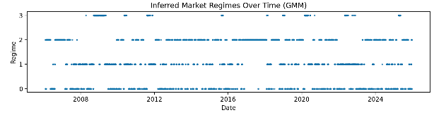
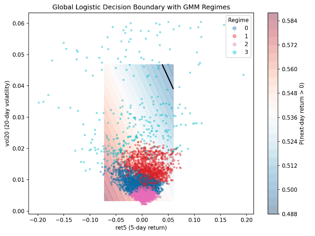
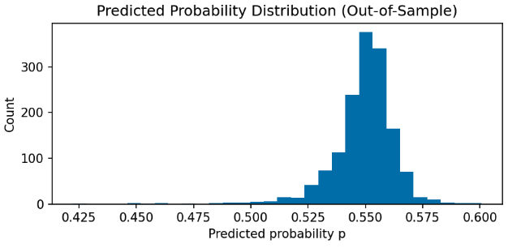

← Back to Projects


Project Report
Regime-Aware Model Risk Visualization
A diagnostic study showing that a model’s reliability is state-dependent, and that disciplined deployment rules (confidence + regime) can improve risk outcomes even when daily prediction is weak.
Executive Summary
- Daily equity direction prediction is noisy, and predicted probabilities are compressed near 0.5.
- Regimes inferred from returns + realized volatility form persistent market states, not random “clusters.”
- Model reliability varies materially by regime, so “average” metrics hide failure modes.
- Filtering trades by confidence and disabling execution in a high-risk regime improves the strategy’s risk profile.
Key numbers (out-of-sample)
Brier score
0.247
Close to an uninformative baseline, consistent with probability compression.
Confidence (|p−0.5|)
mean 0.0498
Std 0.0121, max 0.1008 (test N=1,503).
Regime Sharpe (best)
1.38
Strategy performance concentrates in certain regimes.
High-vol regime
unstable
Regime 3 shows poor/undefined Sharpe and degraded reliability.
Metrics reported are gross of trading frictions and used primarily for diagnostic comparison.
What this demonstrates
- Model risk is conditional: a “single” classifier behaves differently depending on the state distribution it operates under.
- Confidence is not enough: the confidence-accuracy relationship changes by regime, especially in high volatility.
- Prediction ≠ deployment: economic outcomes are strongly influenced by when you choose to trade, not just what the model predicts.
Results
Findings
- Regimes persist and cluster in stress periods. The inferred high-volatility state concentrates around extended market stress, consistent with volatility clustering.
- Reliability is regime-dependent. Accuracy patterns differ by regime; the high-volatility regime shows more erratic confidence-stratified behavior (small samples amplify variability).
- Feature-space separation explains it. Regimes occupy distinct regions in (ret5, vol20), so a single global decision rule effectively faces different operating conditions.
- Probabilities are compressed. Outputs stay near the unconditional mean; probabilities work better as low-amplitude signals than as literal calibrated forecasts.
- Deployment rules change the risk profile. Confidence filtering plus deactivating the high-risk regime primarily reduces drawdown depth and return volatility rather than magically increasing raw accuracy.
Regime-level strategy Sharpe (OOS)
| Regime | Sharpe | Interpretation |
|---|---|---|
| 0 | 1.38 | Strongest contribution in this regime. |
| 1 | 0.41 | Positive but modest. |
| 2 | 0.22 | Low but positive. |
| 3 | NaN | Unstable / adverse high-volatility state. |
Confidence filter used in the strategy: trade only when |p−0.5| > 0.02, and deactivate execution during the high-risk regime.
Methods (Pipeline)
-
1
DataSPY daily closes (2006–2025). Chronological split: 70% train, 30% test.
-
2
FeaturesRecent returns + realized volatility: ret5, vol10, vol20 (standardized on train).
-
3
Regimes (Unsupervised)Gaussian Mixture Model on (ret5, vol10, vol20) fit on train, applied forward.
-
4
Prediction (Supervised)Logistic regression predicts next-day direction using (ret5, vol20).
-
5
ConfidenceUse |p − 0.5| as a scalar conviction score for stratification and filtering.
-
6
Deployment RuleTrade only if |p−0.5| > 0.02 and deactivate execution in the high-risk regime.
-
7
EvaluationOOS accuracy by confidence/regime + strategy Sharpe & max drawdown (gross of costs).
Regime timeline
Figure 1

High-vol regime clusters around prolonged stress episodes, supporting interpretation as persistent market states.
Accuracy vs confidence, by regime
Figure 2
Confidence is not universally monotonic. High-vol regime shows degraded stability (and smaller bin counts).
Equity curve (OOS)
Figure 3
Selective deployment changes drawdowns/volatility more than it changes raw predictive metrics. Gross of costs.
Probability field + regimes
Figure 4

Regimes occupy distinct areas of (ret5, vol20), providing a geometric explanation for state-dependent behavior.
Probability compression
Figure 5

Predicted probabilities concentrate near the unconditional mean, motivating thresholded deployment.
Interpretation and limitations
- Diagnostic, not “alpha claims.” The point is to map failure modes and decide when not to trade.
- Costs not modeled. Results are gross of transaction costs, slippage, and financing/short constraints.
- Small samples in extreme regimes. High-volatility regime bins can be thin; interpret bin-level spikes cautiously.
- Next steps. Richer features, alternative regime definitions, and explicit execution costs would make the deployment test more realistic.